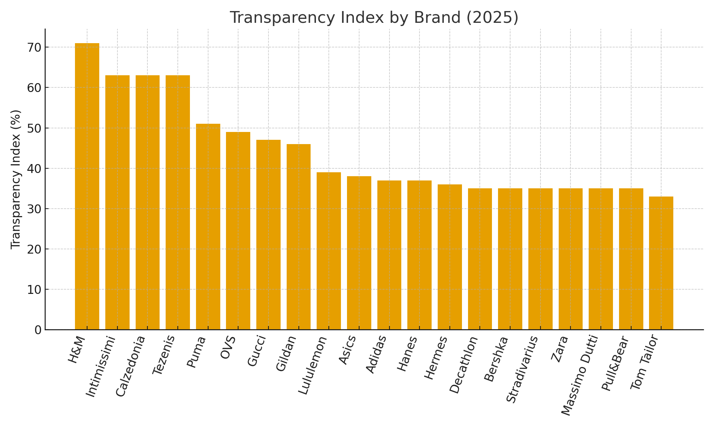
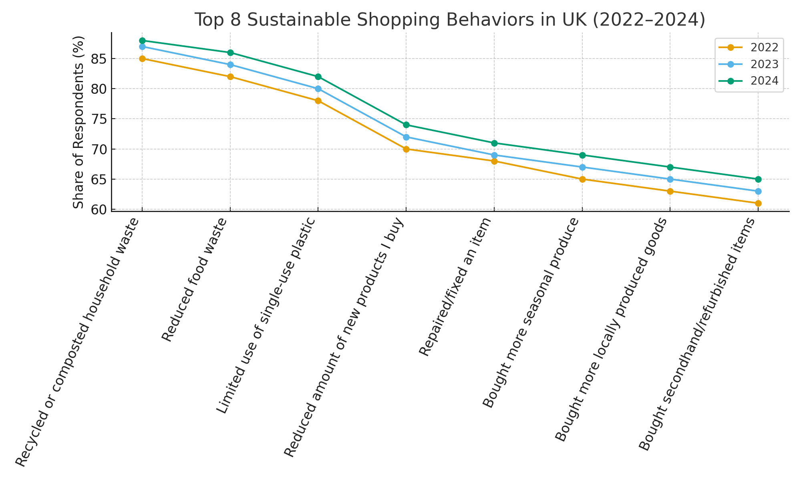
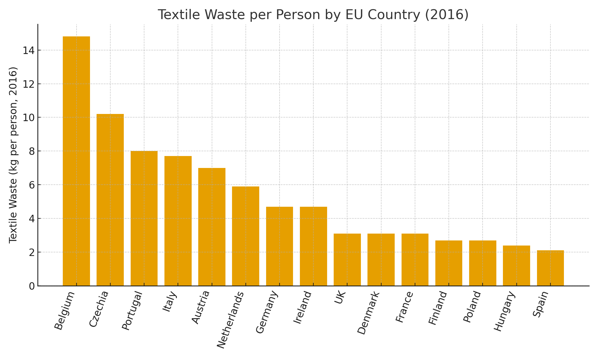
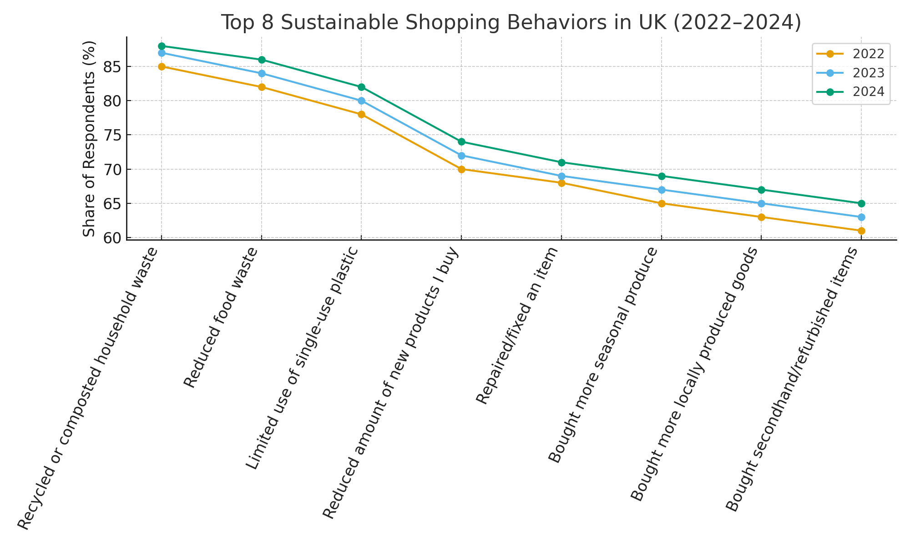
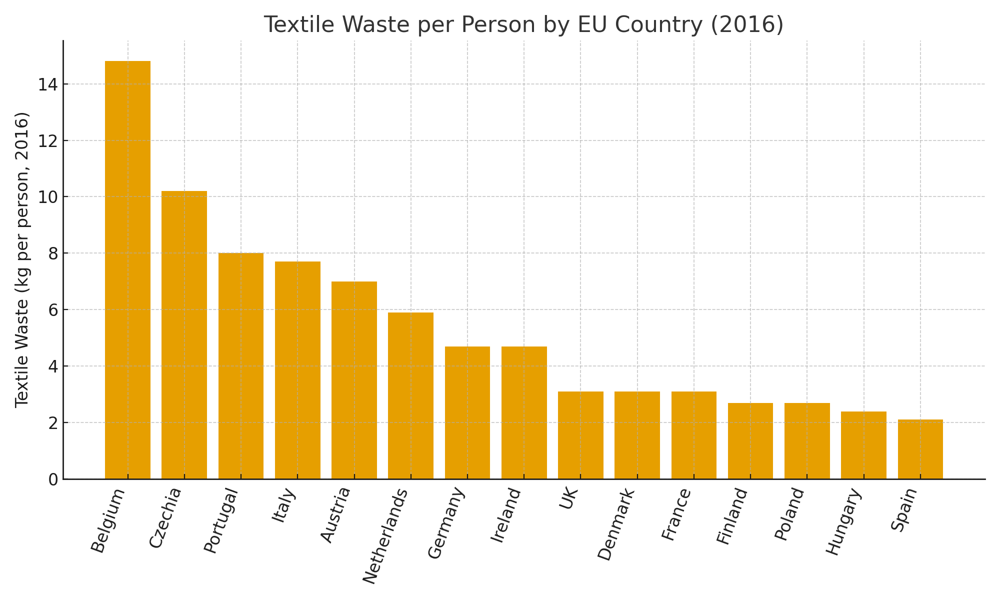

1. Descriptive Analytics – What Happened?
 



• H&M leads global transparency (71%). Zara’s brand value rose steadily, surpassing H&M by 2018.
• UK shoppers increasingly adopt sustainable behaviors (2022–2024).
• Belgium and Czechia generate the most textile waste in the EU.